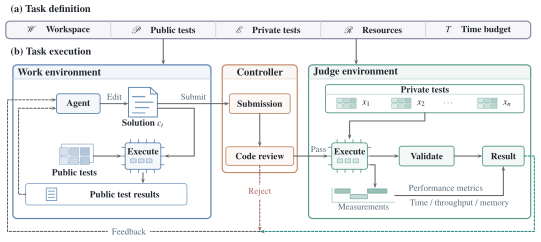
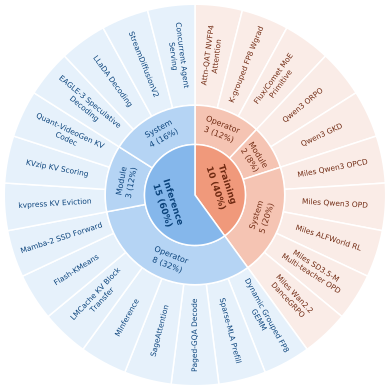

Infrathon Framework
Task Definition specifies what can be optimized and how it is evaluated. Task Execution connects development, submission review, private tests, and feedback.
Task definition and execution
Framework of Infrathon

Task Definition
Human experts use Infrathon-build to construct 25 tasks from real AI infrastructure projects. The suite has 10 training tasks and 15 inference tasks, spanning 11 operators, five modules, and nine systems.
τ = (W, P, E, R, T)
- W · Workspace
- Initial code or an implementation interface, with the files and behavior the agent may change.
- P · Public tests
- Visible correctness cases and a runner for local checks and profiling.
- E · Private tests
- Hidden cases, task-specific checks, scoring rules, and permitted feedback. Cases and scoring code remain inaccessible to the agent.
- R · Resources
- Hardware allocation and software runtime for development and evaluation.
- T · Time budget
- T can be any positive duration or infinity. Experiments use 12 hours for operators and 24 hours for modules and systems, including tool execution and feedback waits.
Task coverage across the infrastructure stack

A concrete task: KVzip KV Scoring
The agent implements a query-agnostic KV-importance scorer for a frozen Qwen3-8B, following the KVzip protocol. Private evaluation uses disjoint samples and additional task types.
| Specification | Public tests | Private tests |
|---|---|---|
| Model | Qwen3-8B | Qwen3-8B |
| Contexts | 63 | 1,812 |
| Questions | 419 | 6,956 |
| Task types | 9 | 12 |
| Context length | 73–29,580 tokens | 70–29,991 tokens |
| Resources | One H100 GPU | Seven H100 GPUs |
Each GPU has 80 GB of memory; the time budget is 24 hours. Both evaluations include SQuAD, GSM8K, RULER, generated NIAH, and SCBench data; private evaluation additionally includes RepoQA.
Task Execution
Work environment
The agent inspects files, edits code, profiles, runs public tests, saves solution versions, and requests private evaluation. It can revise a solution or restore an earlier version from the feedback history.
Runs continue until the budget ends. A stop hook prompts further work when the agent attempts to finish early.
Controller
The Controller checks submitted files and enforces task submission limits before private evaluation.
GPT-6.1 Sol in Codex reviews instruction following and reward hacking. Rejection returns a reason and no private score; accepted submissions go to the Judge.
Judge environment
Separate Work and Judge containers keep private cases and scoring code hidden. Accepted solutions are checked using exact comparisons, numerical tolerances, or downstream quality thresholds.
The Judge returns the private score, execution and validation status, and permitted diagnostics, enabling further revisions within the remaining time.
Task inventory
| Task | Stage | Level | Budget |
|---|---|---|---|
| Attn-QAT NVFP4 attention | training | operator | 12 h |
| K-grouped FP8 Wgrad | training | operator | 12 h |
| Flux/Comet MoE primitive | training | operator | 12 h |
| Qwen3 ORPO | training | module | 24 h |
| Qwen3 GKD | training | module | 24 h |
| Miles Qwen3 OPCD | training | system | 24 h |
| Miles Qwen3 OPD | training | system | 24 h |
| Miles ALFWorld RL | training | system | 24 h |
| Miles SD3.5-M multi-teacher OPD | training | system | 24 h |
| Miles Wan2.2 DanceGRPO | training | system | 24 h |
| Dynamic grouped FP8 GEMM | inference | operator | 12 h |
| Sparse-MLA prefill | inference | operator | 12 h |
| Paged-GQA decode | inference | operator | 12 h |
| SageAttention | inference | operator | 12 h |
| MInference | inference | operator | 12 h |
| LMCache KV block transfer | inference | operator | 12 h |
| Flash-KMeans | inference | operator | 12 h |
| Mamba-2 SSD forward | inference | operator | 12 h |
| kvpress KV eviction | inference | module | 24 h |
| KVzip KV scoring | inference | module | 24 h |
| Quant-VideoGen KV codec | inference | module | 24 h |
| EAGLE-3 speculative decoding | inference | system | 24 h |
| LLaDA decoding | inference | system | 24 h |
| StreamDiffusionV2 | inference | system | 24 h |
| Concurrent agent serving | inference | system | 24 h |